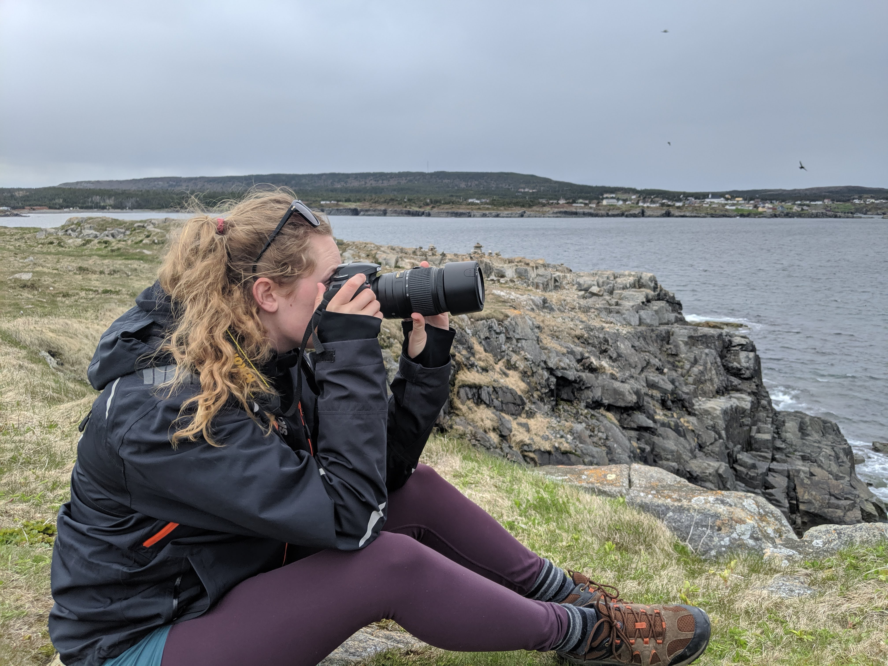

About Shannon Hilland
Captured in Time is a collection of photographs taken by Shannon throughout her travels. These photos show her progression of skill as she dives into her passion of nature photography and learns how to use manual control to her advantage.

Shannon was born and raised in Calgary, AB, and spent her childhood exploring the Rocky Mountains. This early introduction to the wilderness nurtured her love of landscape photography, and of course, animal photography.

Since buying her first DSLR she has taken it all across Canada, Europe, and down to South America. She hopes you enjoy her gallery, and that it may inspire you with your own camera as well.